Skip to main content
Every flower speaks — every bouquet tells a story. Hover over each flower to reveal its meaning.
Our Flower Gallery
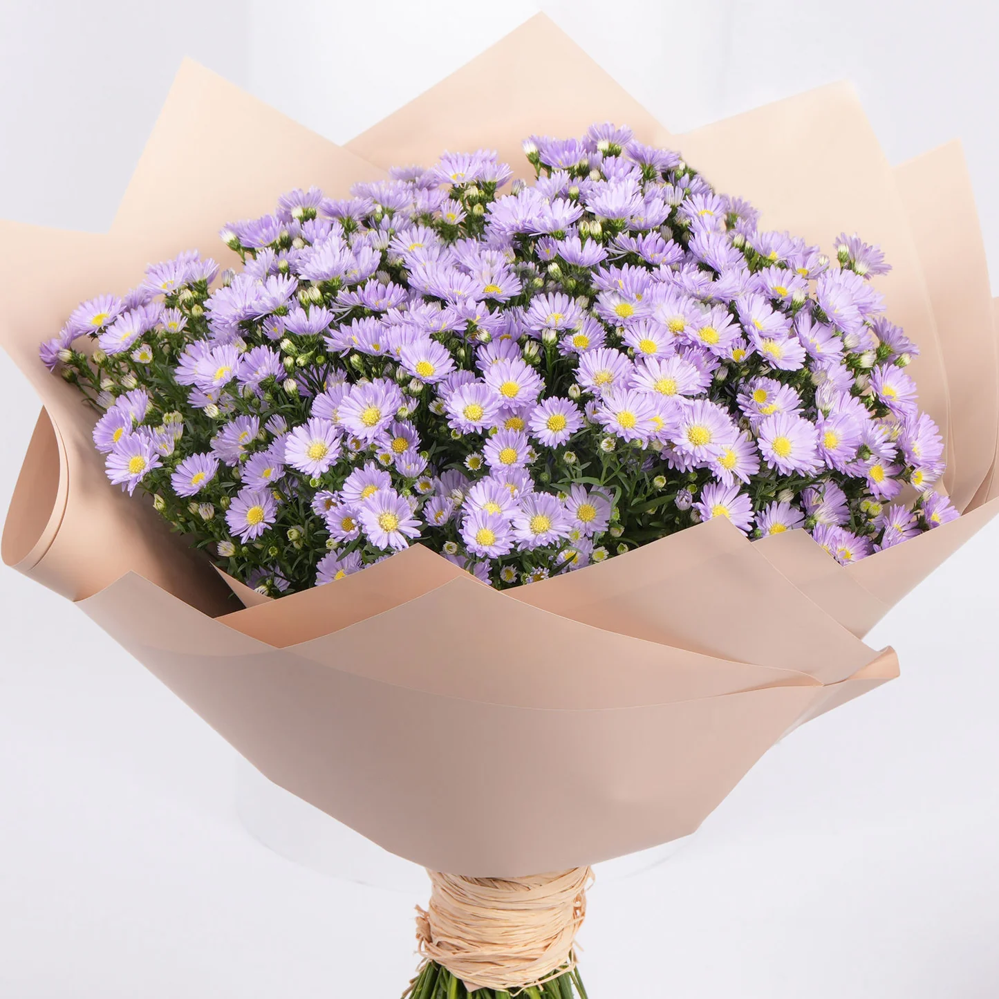
The aster flower generally symbolizes love, wisdom, and faith. In Victorian times, it was also associated with daintiness, patience, and charm.
Asters
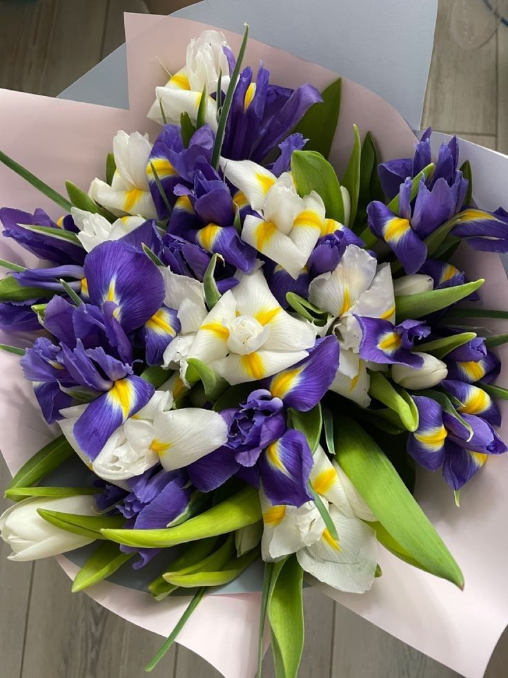
Iris is usually associated with faith, courage, valour, hope and wisdom. It is linked to positive change, communication, and is a symbol of the goddess Iris in Greek mythology.
Iris
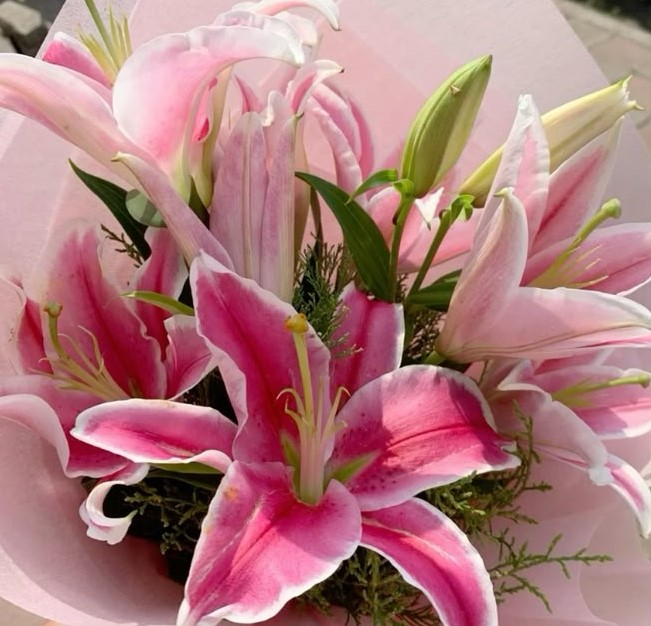
The sweet and innocent beauty of the lily flower has given it the association of fresh life and rebirth.Lilies are one of the most popular and symbolic flowers to gift for a funeral.
Lily
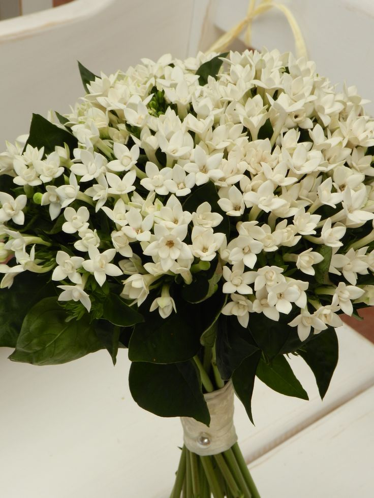
Jasmine flowers symbolize purity, love, and affection, making them significant in personal relationships. Their delicate blossoms evoke a sense of warmth and sincerity
Jasmine
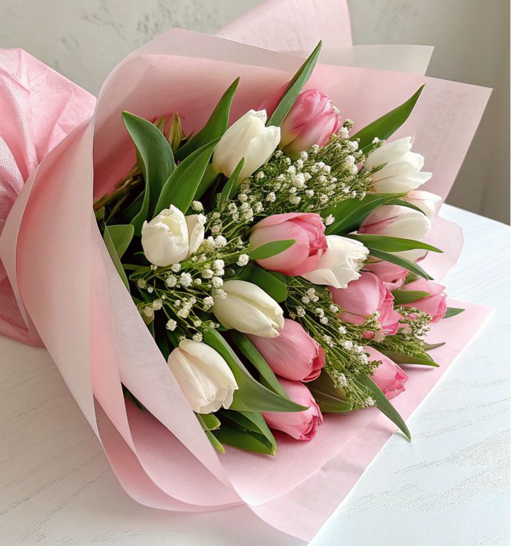
Tulips are associated with Rebirth and new beginnings, as they are one of the first flowers to bloom in spring.
Tulips
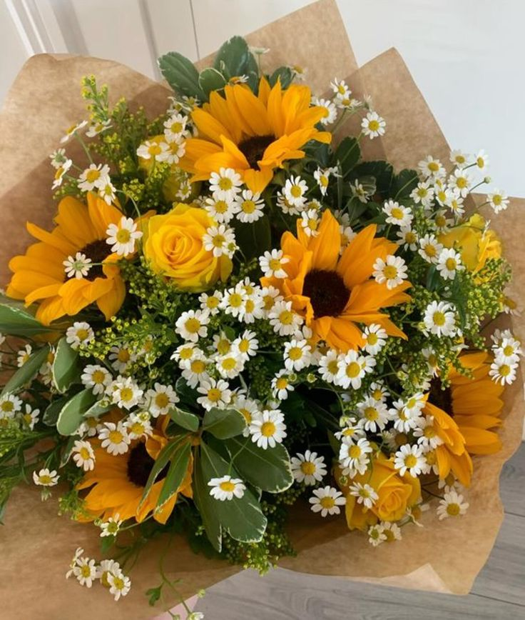
Sunflowers generally symbolize happiness, loyalty, adoration, and faithfulness. They also represent vitality, intelligence, and good fortune.
Sunflower
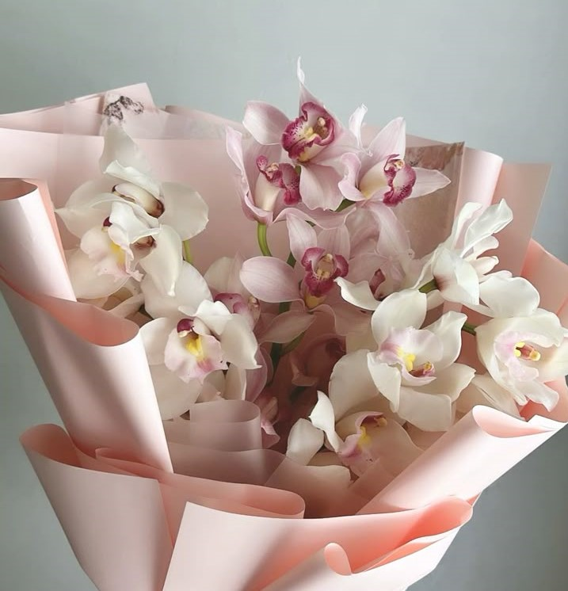
In various cultures, Orchids mean thoughtfulness, refinement, beauty, charm, and love, they're the perfect bloom to celebrate all of life's precious moments
Orchids
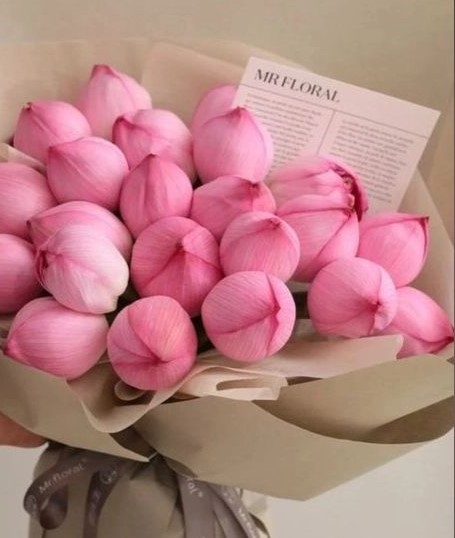
Lotus commonly serves as a sacred for purity, rebirth, and strength. The ability of the lotus to rise above muddy waters reflects the human spirit's capacity to overcome challenges and hardships
Lotus
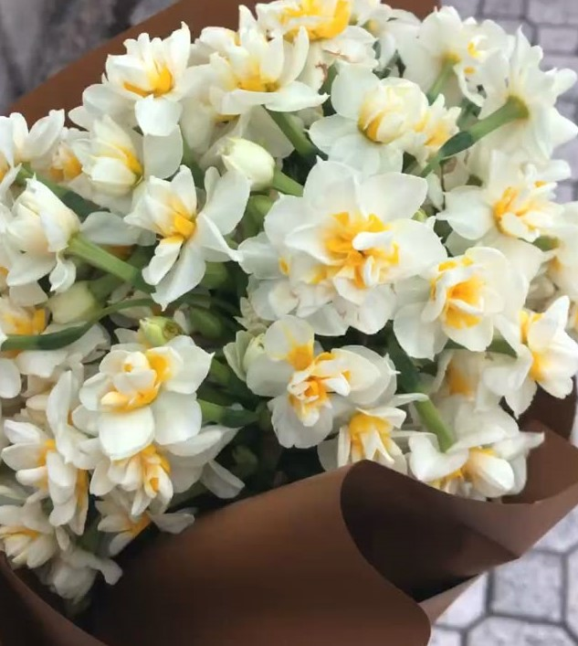
Daffodils have long been associated with new beginnings and rebirth, hope and optimism in relationships.It may also symbols of creativity, energy, resilience, forgiveness and vitality.
Daffodils
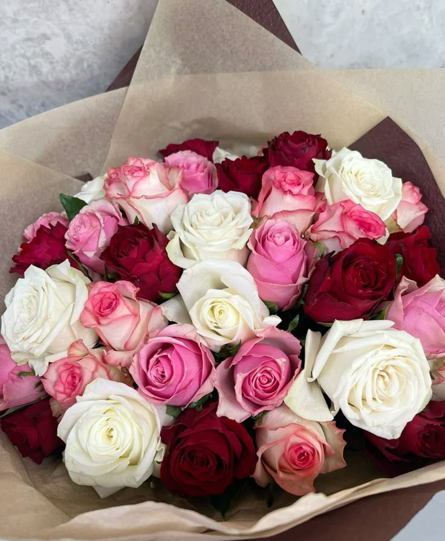
Roses are often associated with love, beauty, and passion. They can also represent friendship, joy, new beginnings, and even mystery or farewell, depending on the color and cultural context.
Roses
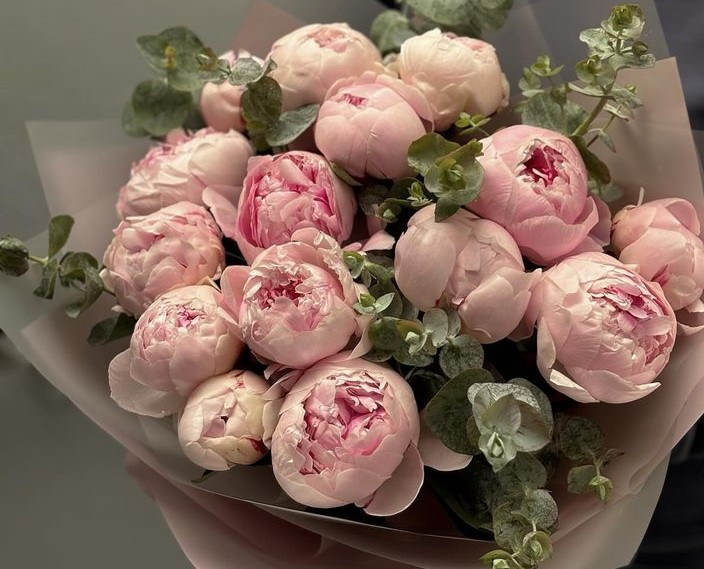
Peonies are often seen as symbols of love, prosperity, honor, and happiness. Depending on the color, they can represent specific meanings like purity, bashfulness, or even a desire for forgiveness.
Peony
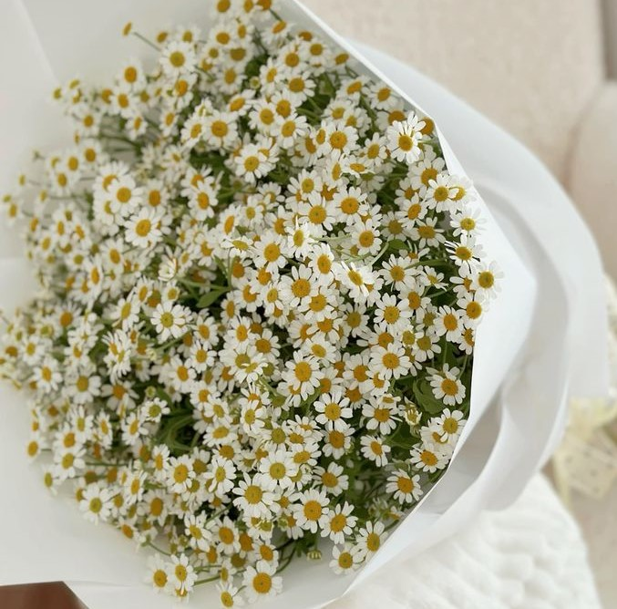
Daisies are associated with purity, childbirth, new beginnings, and cheerfulness. Daisy symbolizes innocence and is associated with memories of collecting wildflower bouquets.
Daisy